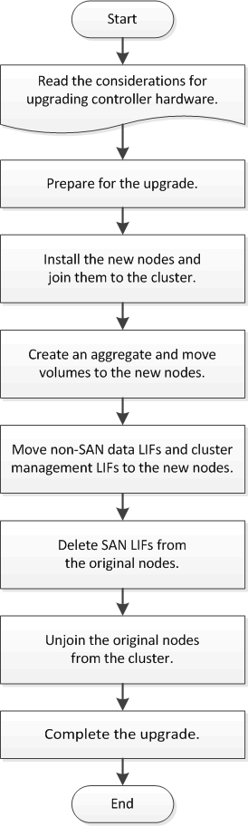

Solicitar cambios en el documento
Solicitar cambios en el documento Editar en GitHub
Editar en GitHub Guía del colaborador
Guía del colaborador
Se proporciona el idioma español mediante traducción automática para su comodidad. En caso de alguna inconsistencia, el inglés precede al español.
Flujo de trabajo
Colaboradores
Si va a actualizar el hardware de una controladora, mueve volúmenes, prepara los nodos originales y une los nuevos nodos al clúster. Mueve volúmenes a los nodos nuevos, configura LIF y desvincula los nodos originales del clúster. La actualización mediante el movimiento de volúmenes es un procedimiento no disruptivo.
